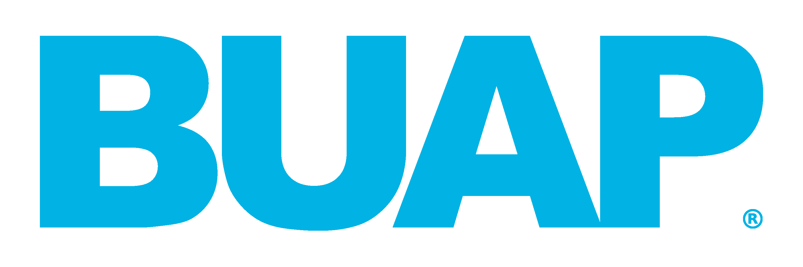

<nav class="navbar navbar-expand-lg bg-dark navbar-dark">
    
  <button class="navbar-toggler" type="button" data-toggle="collapse" data-target="#navbarSupportedContent" aria-controls="navbarSupportedContent" aria-expanded="false" aria-label="Toggle navigation">
    <span class="navbar-toggler-icon"></span>
  </button>

  <div class="collapse navbar-collapse justify-content-left" id="navbarSupportedContent">
    
   
    <ul class="navbar-nav">
        <li class="nav-item mx-5 h6">
            <a class="nav-link" href="#">Restaurar Contraseña</a>
          </li>
      <li class="nav-item mx-5 h6">
        <a class="nav-link" href="#">Crear Proyección</a>
      </li>
      
    </ul>
  </div>
  <div class="collapse navbar-collapse justify-content-left" id="navbarSupportedContent">
  
      <ul class="navbar-nav">
      
        <li class="nav-item mx-5 h6">
          <a class="nav-link" href="#">Cerrar Sesión</a>
        </li>
        
      </ul>
    </div>
</nav>
